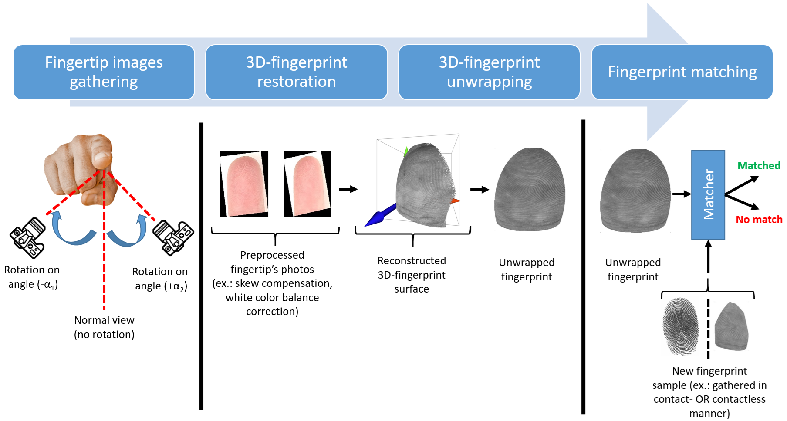

Robust user authentication on mobile devices with dynamic 3D fingerprint representation
IEEE Transactions on Information Forensics and Security
 Minho Kim
Minho Kim


Abstract
This work presents methods for reliable fingerprint recognition and matching irrespective of the fingerprint retrieval approach used. We proposed using a unified 3D-fingerprint model that preserves fine structure instead of creating contact-based or contactless samples during user enrollment. Fast methods for reliable restoration of such fingerprints and their adaptation for matching with other samples are proposed. Performance analysis of the state-of-the-art and proposed solution proved its efficiency in a wide range of practical use cases. The user authentication accuracy (FAR=3.08%, FRR=2.67%) demonstrates up to six times improvement over state-of-the-art solutions, even for the most difficult case of contactless-to-contactless fingerprint matching. Thus, the proposed solution enables reliable user authentication by matching with both contactless and contact-based fingerprint samples without needing to store a set of templates. This is especially important for resource-constrained smartphones and other mobile devices with built-in fingerprint sensors.
Proposed solution
The accurate restoration of the user's fingerprint by the proposed solution is achieved through the integration of novel methods for 3D-fingerprint reconstruction and their robust matching with templates obtained in contact-based and contactless manners. The main processing stages of the proposed solution are presented below.
|  |
The contactless fingerprint restoration begins with gathering a pair of fingertip surface images using the built-in rear camera of a smartphone. We use the widespread assumption that images are gathered under uniform lighting, and the camera's intrinsic parameters (such as focus distance and optical center position) are known in advance. Thus, no additional calibration of the used camera is needed.
At the second stage, gathered pairs of images are used for restoring the 3D-fingerprint. A part (slice) of the whole fingertip surface is reconstructed from each captured image. Then, these slices are merged into a single 3D-fingerprint. The unwrapping procedure is applied to convert the obtained 3D-fingerprint into a planar one and to make fingerprint matching with the reference template possible. The distinctive feature of the proposed unwrapping method is taking into account the curvature and orientation of the processed 3D-fingerprint to minimize elastic and perspective distortions. Finally, the matcher module processes both the prepared fingerprint and the reference template to obtain the final decision for user authentication.
Experiment results
The high-resolution fingerprint scanner Supreme RealScan-D was used to collect the reference fingerprint samples. Also, the popular smartphone models Samsung Galaxy SM-A146B and Galaxy SM-A256B were applied to gather images for contactless fingerprint restoration. The statistics of the collected samples are presented in the table below.
| Used sensor | Number of samples | |||
|---|---|---|---|---|
| In total | Per user in average |
|||
| Reference scanner Supreme RealScan-D | 5,000 | 100 | ||
| Smart- phones |
Samsung SM-A146B |
from rear camera | 53,814 | 1,076 |
| from SMFS | 39,414 | 1,577 | ||
| Samsung SM-A256B |
from rear camera | 64,924 | 1,298 | |
| from SMFS | 39,414 | 1,577 | ||
We performed a modeling study to justify that our 3D reconstruction procedure is precise enough for user authentication. Due to the absence of a "normal" (standard) 3D shape for the human fingertip surface in the open literature, we applied an ellipsoid surface for its approximation. The parameters of the used ellipsoid were randomly selected from a uniform distribution to model the size of real fingers:
- The length for OX axis (width of a finger) was chosen randomly around 18 (mm), allowing deviation of ±25%;
- The length for OY axis (height of a finger) was chosen randomly around 18 (mm), allowing deviation of ±25%;
- The lengths for OZ half-axis (depth of a finger) was chosen around 9 (mm), allowing deviation of ±25%.
| First camera | Second camera | |
|---|---|---|
| along OX axis, mm | x1 ~ [-40, -10] | x2 ~ [10, 40] |
| along OY axis, mm | y1 ~ [-10, -10] | y2 ~ [-10, 10] |
| along OZ axis, mm | z1 ~ [90, 110] | z2 ~ [90, 110] |
| Euler rotation angles, degrees |
(α1, α2, α3): αi = 0° |
(α1', α2', α3'): αi' ~ [-25°, 25°] |
In figure below, we show an example of the distribution of ground truth points on an ellipsoid surface. We placed 200 randomly selected points on the ellipsoid surface and calculated their projections onto visible 2D planes of fields of view. The 2D points projected from same 3D-point are referred as corresponding ones. Finally, the coordinates of the obtained 2D points were rounded to integers (pixels). This rounding introduced some errors into the point coordinates, and the larger the focal length, the smaller this noise will be.
Drag to rotate | Scroll to zoom
Several state-of-the-art methods for fundamental matrix F estimation were checked, namely RANSAC, 7Point/8Point[Hartley:MultipleView], and USAC[Raguram:USAC]. During the evaluation, we used the default parameters for these methods according to the reference implementation in the OpenCV library[OpenCV:USAC]. In Figure 1: Reconstruction Error, we show the dependency of the RMSE of reconstructed point positions and rotation errors on the camera focal length.
Interactive Reconstruction Error Analysis
Position Errors
Angle Errors
The proposed solution was compared with state-of-the-art methods of contact-to-contactless fingerprint matching. The performance evaluation was done using FAR and FRR according to the recommendations for measuring biometric unlock security for Android OS[Android:MeasuringBiometricUnlockSecurity].
During the evaluation, we compared the proposed solution with the following methods:
- VeriFinger SDK — is based on extraction and matching of popular fingerprint features, namely minutiae, on fingerprint samples[Verifinger:SDK]. The trial version of SDK was used due to licensing restrictions.
- Grosz et al. method — is based on matching the contactless-to-contact based fingerprint using minutiae and texture features[Grosz:C2CL]. The method includes TPS module to detect elastic distortions on contactless fingerprint and to reduce their impact on matching accuracy. The texture-related features are extracted using modern DeepPrint network proposed by Engelsma et al.[Engelsma:DeepPrint]. The minutiae are extracted using popular VeriFinger SDK[Verifinger:SDK]. Matching of fingerprint was done by comparison of individual matching of texture-related features and minutiae according to authors recommendations[Grosz:C2CL].
- Pan et al. method — is based on applying the original deep-learning based dense minutiae descriptor[Pan:LatentFingerprintMatching]. It is represented as 3D-array, with two dimensions associated with the original image plane and the other dimension representing the abstract features. The proposed solution allows for reliable fingerprints matching while preserving relatively low computational overhead. We re-used the open source implementation of proposed solution[Pan:LatentFingerprintMatchingImplementation].
- MinNet model — is proposed by Ozturk et al.[Ozturk:MinNet], and is based on using the minutiae patch embedding network. Embedding vectors generated for a fixed-size patch extracted around a minutiae are used in the local similarity assignment algorithm to produce a global similarity. This makes possible joint optimization of the spatial and angular distribution of neighboring minutiae and ridge flows of the patches. Due to absent of publicly available implementation, we re-implemented the solution and performed its training on collected in-house dataset.
The performance evaluation was done for three cases. First, we analyzed the accuracy of the restored contactless fingerprint by matching it with samples from the contact-based reference fingerprint scanner. Then, we considered a perspective scenario where the reference template is created on-device in a contactless manner, while user authentication is performed by gathering samples from the built-in fingerprint scanner. The last case relates to the situation of matching both the template and the gathered sample contactlessly. In this case, we considered the performance of the solution through the use of a mobile device that has only a camera and does not include any built-in fingerprint sensors.
The estimated authentication accuracy for the proposed and state-of-the-art solutions for the first considered use case (matching of contactless and contact fingerprints) is presented in Table 1: MatchContactlessToContactMerged.
User authentication accuracy by matching of restored fingerprint with reference template using in-house dataset. The results are presented in the format of mean ± standard deviation.
| Processing method | Contactless fingerprint to contact template matching |
Contact fingerprint to contactless template matching |
Contactless fingerprint to contactless template matching |
|||
|---|---|---|---|---|---|---|
| FAR metric | FRR metric | FAR metric | FRR metric | FAR metric | FRR metric | |
| Ideal case | 0.00 | 0.00 | 0.00 | 0.00 | 0.00 | 0.00 |
| VeriFinger SDK | 28.13±12.96 | 35.01±10.14 | 23.45±9.23 | 33.78±12.02 | 48.48±15.74 | 40.04±16.64 |
| Grosz et al. method | 7.03±6.11 | 8.31±7.22 | 6.08±8.23 | 7.93±9.14 | 8.02±10.47 | 9.04±12.27 |
| Pan et al. method | 11.48±6.47 | 14.21±1.82 | 12.18±9.34 | 12.57±6.28 | 17.57±11.81 | 18.76±10.78 |
| MinNet model | 13.25±6.14 | 18.32±7.58 | 9.27±7.42 | 15.24±8.27 | 13.48±9.27 | 20.18±9.08 |
| Proposed solution | 2.05±1.37 | 3.07±1.87 | 1.93±2.15 | 2.24±2.08 | 3.08±1.99 | 2.67±1.08 |
The results of experimental evaluation of modern and proposed methods proved the effectiveness of our solution in case of matching similar fingerprint types, namely contactless-to-contactless. The proposed solution preserves low error rate (within 3%), while applying state-of-the-art solutions leads to dramatically increasing of FAR and FRR up to six times (FAR ≃ 17.57% and FRR ≃ 18.76%). In the case of cross-matching of contactless fingerprints with contact-based fingerprints, the state-of-the-art methods allows to achieve moderate accuracy (FAR ≃ 11.48% and FRR ≃ 14.21%). The proposed solution makes possible decreasing the error rates up to five times (FAR ≃ 2.05% and FRR ≃ 3.07%). This proves effectiveness of our methods in the most difficult cases of fingerprints cross-matching with minimal impact on processing duration, where modern solutions requires thorough and tedious adaptation for each case.